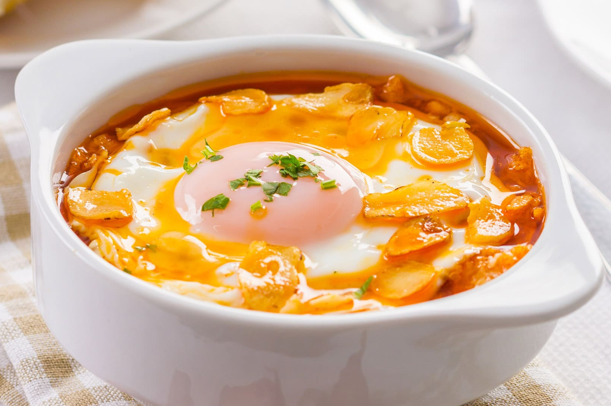

Recetas de cocina
Sopa de Ajo 🇪🇸

Ingredientes:
- 8 dientes de ajo
- 150 g de pan duro (preferiblemente del día anterior)
- 1 litro de caldo de pollo
- 4 huevos
- 100 g de jamón serrano en taquitos
- 1 cucharada de pimentón dulce
- Aceite de oliva
- Sal y pimienta
Preparación:
1. Preparar los ingredientes:
Pela los dientes de ajo y córtalos en láminas finas. Corta el pan en rebanadas finas o en
trozos pequeños.
2. Freír el ajo:
En una cazuela grande, calienta un buen chorro de aceite de oliva y sofríe los ajos a fuego lento hasta
que estén dorados, cuidando de que no se quemen, ya que esto podría amargar la sopa.
3. Añadir el pimentón y el pan:
Una vez dorados los ajos, añade el pimentón dulce y remueve rápidamente para que no se
queme. Luego, agrega el pan y sofríelo junto al ajo durante unos minutos.
4. Incorporar el caldo:
Vierte el caldo de pollo caliente sobre la mezcla de ajo y pan. Cocina a fuego lento durante 15
minutos, dejando que el pan se deshaga parcialmente y la sopa espese ligeramente.
5. Añadir los huevos y jamón:
Mientras la sopa sigue cocinándose, añade los taquitos de jamón serrano. Luego, rompe los
huevos directamente sobre la sopa y cocina durante unos minutos más hasta que las claras se hayan cuajado, pero las
yemas aún estén algo líquidas.
6. Servir:
Sirve la sopa bien caliente, con un poco de pimienta recién molida y, si se desea, un chorrito de aceite de
oliva virgen extra. Es perfecta para días fríos o como entrante en una comida especial.